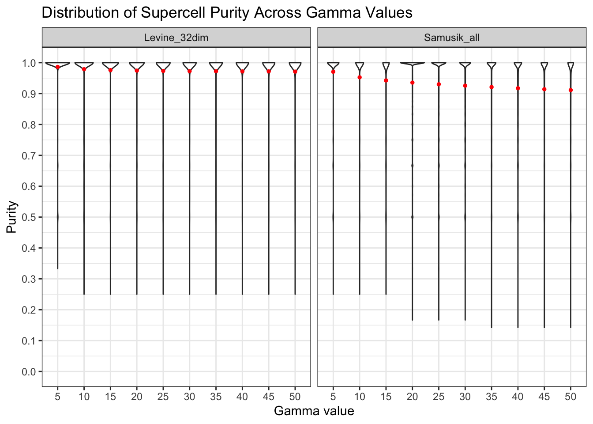
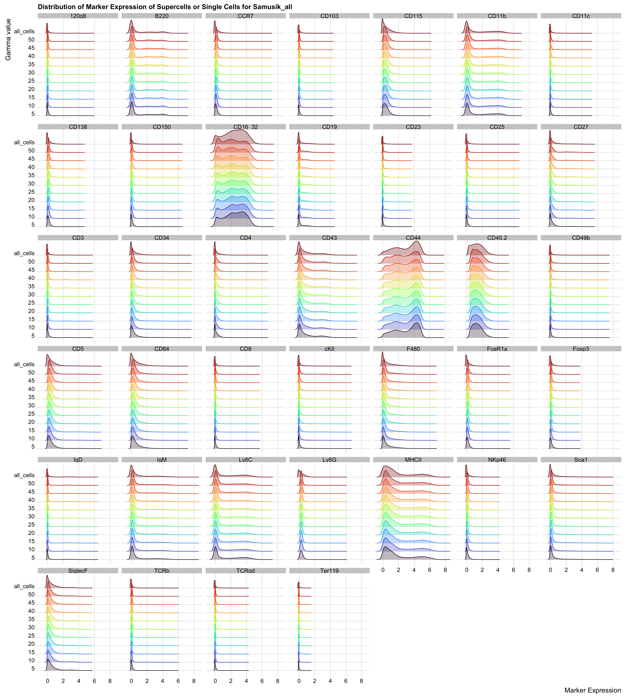

Last updated: 2024-01-31
Checks: 6 1
Knit directory: SuperCellCyto-analysis/
This reproducible R Markdown analysis was created with workflowr (version 1.7.0). The Checks tab describes the reproducibility checks that were applied when the results were created. The Past versions tab lists the development history.
The R Markdown file has unstaged changes. To know which version of
the R Markdown file created these results, you’ll want to first commit
it to the Git repo. If you’re still working on the analysis, you can
ignore this warning. When you’re finished, you can run
wflow_publish to commit the R Markdown file and build the
HTML.
Great job! The global environment was empty. Objects defined in the global environment can affect the analysis in your R Markdown file in unknown ways. For reproduciblity it’s best to always run the code in an empty environment.
The command set.seed(42) was run prior to running the
code in the R Markdown file. Setting a seed ensures that any results
that rely on randomness, e.g. subsampling or permutations, are
reproducible.
Great job! Recording the operating system, R version, and package versions is critical for reproducibility.
Nice! There were no cached chunks for this analysis, so you can be confident that you successfully produced the results during this run.
Great job! Using relative paths to the files within your workflowr project makes it easier to run your code on other machines.
Great! You are using Git for version control. Tracking code development and connecting the code version to the results is critical for reproducibility.
The results in this page were generated with repository version 264aa64. See the Past versions tab to see a history of the changes made to the R Markdown and HTML files.
Note that you need to be careful to ensure that all relevant files for
the analysis have been committed to Git prior to generating the results
(you can use wflow_publish or
wflow_git_commit). workflowr only checks the R Markdown
file, but you know if there are other scripts or data files that it
depends on. Below is the status of the Git repository when the results
were generated:
Ignored files:
Ignored: .DS_Store
Ignored: .Rhistory
Ignored: .Rproj.user/
Ignored: analysis/.DS_Store
Ignored: code/.DS_Store
Ignored: code/b_cell_identification/.DS_Store
Ignored: code/b_cell_identification/runtime_benchmark/.DS_Store
Ignored: code/batch_correction/.DS_Store
Ignored: code/batch_correction/runtime_benchmark/.DS_Store
Ignored: code/explore_supercell_purity_clustering/.DS_Store
Ignored: code/explore_supercell_purity_clustering/functions/.DS_Store
Ignored: code/explore_supercell_purity_clustering/louvain_all_cells/.DS_Store
Ignored: code/explore_supercell_purity_clustering/louvain_all_cells/levine_32dim/.DS_Store
Ignored: code/label_transfer/.Rhistory
Ignored: data/.DS_Store
Ignored: data/bodenmiller_cytof/
Ignored: data/explore_supercell_purity_clustering/
Ignored: data/haas_bm/
Ignored: data/oetjen_bm_dataset/
Ignored: data/trussart_cytofruv/
Ignored: output/.DS_Store
Ignored: output/bodenmiller_cytof/
Ignored: output/explore_supercell_purity_clustering/
Ignored: output/label_transfer/
Ignored: output/oetjen_b_cell_panel/
Ignored: output/trussart_cytofruv/
Untracked files:
Untracked: code/b_cell_identification/additional_code/
Untracked: code/batch_correction/additional_code/
Untracked: code/explore_supercell_purity_clustering/additional_code/
Untracked: code/label_transfer/additional_code/
Unstaged changes:
Modified: SuperCellCyto-analysis.Rproj
Modified: analysis/b_cells_identification.Rmd
Modified: analysis/batch_correction.Rmd
Modified: analysis/explore_supercell_purity_clustering.Rmd
Note that any generated files, e.g. HTML, png, CSS, etc., are not included in this status report because it is ok for generated content to have uncommitted changes.
These are the previous versions of the repository in which changes were
made to the R Markdown
(analysis/explore_supercell_purity_clustering.Rmd) and HTML
(docs/explore_supercell_purity_clustering.html) files. If
you’ve configured a remote Git repository (see
?wflow_git_remote), click on the hyperlinks in the table
below to view the files as they were in that past version.
| File | Version | Author | Date | Message |
|---|---|---|---|---|
| html | 98e46e0 | Givanna Putri | 2023-08-15 | Build site. |
| html | a55c3ba | Givanna Putri | 2023-07-28 | Build site. |
| html | 366514e | Givanna Putri | 2023-07-28 | Build site. |
| Rmd | 402358b | Givanna Putri | 2023-07-28 | wflow_publish(c("analysis/*Rmd")) |
We assessed whether supercells could preserve the biological diversity inherent in a dataset, and whether the clustering of supercells could expedite the process of cell type identification without compromising accuracy.
We ran SuperCellCyto on two publicly accessible cytometry datasets from Weber and Robinson’s clustering benchmarking study (Weber and Robinson 2016).
The cell type annotation were done using manual gating by an immunologist.
Levine_32dim dataset (Levine et al. 2015) measures the expression of 32 markers in bone marrow cells from healthy human donors, comprised of 2 samples, 265,627 cells, and 14 cell types, with cell type labels assigned to 39% (104,184) of cells.
Samusik_all dataset (Samusik et al. 2016) quantifies the expression of 39 markers in bone marrow cells from healthy mice. There are 10 samples, 841,644 cells, and 24 cell types, with cell type labels assigned to 61% (514,386) of cells.
The R scripts required to run SuperCellCyto and perform clustering
can be found in the
code/explore_supercell_purity_clustering directory.
library(data.table)
library(ggplot2)
library(scales)
library(here)
library(stringr)
library(ggridges)
library(viridis)levine_res_dir <- here("output", "explore_supercell_purity_clustering",
"20230511", "levine_32dim")
samusik_res_dir <- here("output", "explore_supercell_purity_clustering",
"20230511", "samusik_all")How many supercells were generated per gamma value?
gamma <- seq(5, 50, 5)
n_supercells_levine <- sapply(gamma, function(gam) {
nrow(fread(here(levine_res_dir, "supercell_runs",
paste0("supercellExpMat_gamma", gam, ".csv"))))
})
n_supercells_samusik <- sapply(gamma, function(gam) {
nrow(fread(here(samusik_res_dir, "supercell_runs",
paste0("supercellExpMat_gamma", gam, ".csv"))))
})
n_cells_levine <- nrow(fread(here(levine_res_dir, "supercell_runs",
"supercellCellMap_gamma5.csv")))
n_cells_samusik <- nrow(fread(here(samusik_res_dir, "supercell_runs",
"supercellCellMap_gamma5.csv")))
n_supercells <- data.table(gamma, n_supercells_levine, n_supercells_samusik)
n_supercells gamma n_supercells_levine n_supercells_samusik
1: 5 53125 168328
2: 10 26563 84164
3: 15 17709 56109
4: 20 13282 42082
5: 25 10625 33666
6: 30 8854 28055
7: 35 7589 24048
8: 40 6641 21042
9: 45 5903 18702
10: 50 5313 16832n_supercells_plot <- data.table(
gamma = rep(gamma, 2),
n_cells = c(n_supercells_levine, n_supercells_samusik),
dataset = c(rep("Levine_32dim", length(gamma)),
rep("Samusik_all", length(gamma)))
)
n_supercells_plot$gamma <- factor(n_supercells_plot$gamma, levels = c(gamma))
n_supercells_plot <- n_supercells_plot[order(gamma)]facet_labels <- c(
"Levine_32dim" = paste0("Levine_32dim\n",
format(n_cells_levine, big.mark = ","),
" cells"),
"Samusik_all" = paste0("Samusik_all\n",
format(n_cells_samusik, big.mark = ","),
" cells")
)
ggplot(n_supercells_plot, aes(x = gamma, y = n_cells)) +
geom_bar(stat = "identity", fill = "blue") +
facet_wrap(~dataset, labeller = labeller(dataset = facet_labels)) +
scale_y_continuous(labels = label_comma(), breaks = pretty_breaks(n = 10)) +
labs(
y = "Number of supercells", x = "Gamma",
title = "Number of supercells generated per gamma value"
) +
theme_bw()
| Version | Author | Date |
|---|---|---|
| 366514e | Givanna Putri | 2023-07-28 |
We investigate how gamma parameters influence Supercell Purity. Gamma
values determine the granularity of the Supercell with a direct
relationship:
gamma = number of cells / number of supercells. A larger
gamma implies fewer, larger supercells (each supercell capturing more
cells), while a smaller gamma leads to more, smaller supercells.
levine_purity <- fread(here(levine_res_dir, "evaluation",
"supercell_purities.csv"))
levine_purity[, data_source := "Levine_32dim"]
samusik_purity <- fread(here(samusik_res_dir, "evaluation",
"supercell_purities.csv"))
samusik_purity[, data_source := "Samusik_all"]
purity_scores <- rbind(levine_purity, samusik_purity)
purity_scores[, gamma := factor(gamma)]ggplot(purity_scores, aes(y = purity, x = gamma)) +
geom_violin() +
stat_summary(fun = mean, geom = "point", color = "red", size = 1) +
facet_wrap(~data_source) +
theme_bw() +
scale_y_continuous(breaks = pretty_breaks(n = 10), limits = c(0, 1)) +
labs(
y = "Purity", x = "Gamma value",
title = "Distribution of Supercell Purity Across Gamma Values"
)
| Version | Author | Date |
|---|---|---|
| 366514e | Givanna Putri | 2023-07-28 |
What are the mean purity scores?
mean_purity <- purity_scores[, .(mean_purity = mean(purity)), by = c("gamma", "data_source")]
ggplot(mean_purity, aes(x = gamma, y = mean_purity, fill = data_source)) +
geom_bar(stat = "identity", position = position_dodge()) +
scale_fill_manual(values = c("Levine_32dim" = "#D22B2B", "Samusik_all" = "#6495ED")) +
scale_y_continuous(breaks = pretty_breaks(n = 10), limits = c(0, 1)) +
theme_classic() +
labs(
x = "Gamma value", y = "Mean Purity", fill = "Dataset",
title = "Supercell Mean Purity Across Gamma Values"
)
| Version | Author | Date |
|---|---|---|
| 366514e | Givanna Putri | 2023-07-28 |
Proportion of purity scores < 0.5 across all gamma values?
poor_purity <- purity_scores[purity < 0.5, ]
poor_purity_cnt <- merge.data.table(
poor_purity[, .N, by = "data_source"],
purity_scores[, .N, by = "data_source"],
by = "data_source",
suffixes = c("_poor", "_all")
)
poor_purity_cnt[, percent := N_poor * 100 / N_all]
poor_purity_cnt data_source N_poor N_all percent
1: Levine_32dim 56 149116 0.03755466
2: Samusik_all 2572 432821 0.59424104For both datasets, we observed very high mean purity scores across all gamma values (purity > 0.9), with the vast proportion of supercells attaining a purity score of 1. A small percentage of supercells (0.04% for Levine_32dim and 0.59% for Samusik_all) obtained purity < 0.5.
markers <- fread(here(
"data", "explore_supercell_purity_clustering",
"samusik_all", "samusik_all_asinh_markers_info.csv"
))
markers <- markers[marker_class != "none"]
raw_dat <- fread(here(
"data", "explore_supercell_purity_clustering",
"samusik_all", "samusik_all_asinh.csv"
))
raw_dat$from <- "all_cells"
supercell_dat <- rbindlist(lapply(seq(5, 50, by = 5), function(gamma_val) {
dt <- fread(here(
samusik_res_dir, "supercell_runs",
paste0("supercellExpMat_gamma", gamma_val, ".csv")
))
dt$from <- gamma_val
return(dt[, c("from", paste0(markers$marker_name, "_asinh_cf5")), with = FALSE])
}))
all_dat <- rbind(supercell_dat,
raw_dat[, c("from", paste0(markers$marker_name, "_asinh_cf5")), with = FALSE])
all_dat$from <- factor(all_dat$from, levels = c(seq(5, 50, 5), "all_cells"))all_dat_molten <- melt(all_dat, id.vars = "from")
all_dat_molten[, variable := gsub("_asinh_cf5", "", variable)]
ggplot(all_dat_molten, aes(x = value, y = from, colour = from, fill = from)) +
geom_density_ridges(alpha = 0.3) +
scale_colour_viridis(option = "turbo", discrete = TRUE, guide = "none") +
scale_fill_viridis(option = "turbo", discrete = TRUE, guide = "none") +
theme_ridges() +
facet_wrap(~variable) +
scale_x_continuous(breaks = pretty_breaks(n = 5)) +
labs(
y = "Gamma value", x = "Marker Expression",
title = "Distribution of Marker Expression of Supercells or Single Cells for Samusik_all"
)
| Version | Author | Date |
|---|---|---|
| 366514e | Givanna Putri | 2023-07-28 |
markers <- fread(here(
"data", "explore_supercell_purity_clustering",
"levine_32dim", "levine_32_asinh_markers_info.csv"
))
markers <- markers[marker_class != "none"]
raw_dat <- fread(here(
"data", "explore_supercell_purity_clustering",
"levine_32dim", "levine_32_asinh.csv"
))
raw_dat$from <- "all_cells"
supercell_dat <- rbindlist(lapply(seq(5, 50, by = 5), function(gamma_val) {
dt <- fread(here(
levine_res_dir, "supercell_runs",
paste0("supercellExpMat_gamma", gamma_val, ".csv")
))
dt$from <- gamma_val
return(dt[, c("from", paste0(markers$marker_name, "_asinh_cf5")), with = FALSE])
}))
all_dat <- rbind(supercell_dat,
raw_dat[, c("from", paste0(markers$marker_name, "_asinh_cf5")), with = FALSE])
all_dat$from <- factor(all_dat$from, levels = c(seq(5, 50, 5), "all_cells"))all_dat_molten <- melt(all_dat, id.vars = "from")
all_dat_molten[, variable := gsub("_asinh_cf5", "", variable)]
ggplot(all_dat_molten, aes(x = value, y = from, colour = from, fill = from)) +
geom_density_ridges(alpha = 0.3) +
scale_colour_viridis(option = "turbo", discrete = TRUE, guide = "none") +
scale_fill_viridis(option = "turbo", discrete = TRUE, guide = "none") +
theme_ridges() +
facet_wrap(~variable) +
scale_x_continuous(breaks = pretty_breaks(n = 5)) +
labs(
y = "Gamma value", x = "Marker Expression",
title = "Distribution of Marker Expression of Supercells or Single Cells for Levine_32dim"
)
| Version | Author | Date |
|---|---|---|
| 366514e | Givanna Putri | 2023-07-28 |
The distribution of marker expression between the supercells and single cells are almost identical.
algo <- c("flowsom", "louvain")
levine_ari <- rbindlist(lapply(algo, function(alg) {
res <- fread(here(levine_res_dir, "evaluation", paste0(alg, "_ari_vs_truth.csv")))
res <- res[, c("gamma", "ari"), with = FALSE]
res[, algorithm := str_to_title(alg)]
res[, dataset := "Levine_32dim"]
return(res)
}))
samusik_ari <- rbindlist(lapply(algo, function(alg) {
res <- fread(here(samusik_res_dir, "evaluation", paste0(alg, "_ari_vs_truth.csv")))
res <- res[, c("gamma", "ari"), with = FALSE]
res[, algorithm := str_to_title(alg)]
res[, dataset := "Samusik_all"]
}))
ari_truth <- rbind(levine_ari, samusik_ari)
ari_truth[, algorithm := ifelse(algorithm == "Flowsom", "FlowSOM", algorithm)]ggplot(ari_truth, aes(x = factor(gamma), y = ari, fill = algorithm)) +
geom_boxplot(outlier.size = 0.5, lwd = 0.3) +
facet_wrap(~dataset) +
theme_bw() +
scale_y_continuous(breaks = pretty_breaks(n = 10), limits = c(0, 1)) +
scale_fill_manual(values = c("FlowSOM" = "orange", "Louvain" = "#0096FF")) +
labs(
y = "Adjusted Rand Index (ARI)", x = "Gamma value", fill = "Algorithm",
title = "Concordance Between Supercell Clustering and Cell Type Annotation"
)
| Version | Author | Date |
|---|---|---|
| 366514e | Givanna Putri | 2023-07-28 |
High scores across all datasets, clustering algorithms, and gamma values
algo <- c("flowsom", "louvain")
levine_ari <- rbindlist(lapply(algo, function(alg) {
res <- fread(here(levine_res_dir, "evaluation", paste0(alg, "_ari_vs_all.csv")))
res <- res[, c("gamma", "ari"), with = FALSE]
res[, algorithm := str_to_title(alg)]
res[, dataset := "Levine_32dim"]
return(res)
}))
samusik_ari <- rbindlist(lapply(algo, function(alg) {
res <- fread(here(samusik_res_dir, "evaluation", paste0(alg, "_ari_vs_all.csv")))
res <- res[, c("gamma", "ari"), with = FALSE]
res[, algorithm := str_to_title(alg)]
res[, dataset := "Samusik_all"]
}))
ari_all <- rbind(levine_ari, samusik_ari)
ari_all[, algorithm := ifelse(algorithm == "Flowsom", "FlowSOM", algorithm)]ggplot(ari_all, aes(x = factor(gamma), y = ari, fill = algorithm)) +
geom_boxplot(outlier.size = 0.5, lwd = 0.3) +
facet_wrap(~dataset) +
theme_bw() +
scale_y_continuous(breaks = pretty_breaks(n = 10), limits = c(0, 1)) +
scale_fill_manual(values = c("FlowSOM" = "orange", "Louvain" = "#0096FF")) +
labs(
y = "Adjusted Rand Index (ARI)", x = "Gamma value", fill = "Algorithm",
title = "Concordance Between Supercell and Single Cell Clustering"
)
| Version | Author | Date |
|---|---|---|
| 366514e | Givanna Putri | 2023-07-28 |
High scores across all datasets, clustering algorithms, and gamma values.
sessionInfo()R version 4.2.3 (2023-03-15)
Platform: aarch64-apple-darwin20 (64-bit)
Running under: macOS 14.0
Matrix products: default
BLAS: /Library/Frameworks/R.framework/Versions/4.2-arm64/Resources/lib/libRblas.0.dylib
LAPACK: /Library/Frameworks/R.framework/Versions/4.2-arm64/Resources/lib/libRlapack.dylib
locale:
[1] en_US.UTF-8/en_US.UTF-8/en_US.UTF-8/C/en_US.UTF-8/en_US.UTF-8
attached base packages:
[1] stats graphics grDevices utils datasets methods base
other attached packages:
[1] viridis_0.6.2 viridisLite_0.4.1 ggridges_0.5.4 stringr_1.5.0
[5] here_1.0.1 scales_1.2.1 ggplot2_3.4.1 data.table_1.14.10
[9] workflowr_1.7.0
loaded via a namespace (and not attached):
[1] tidyselect_1.2.0 xfun_0.39 bslib_0.4.2 colorspace_2.1-0
[5] vctrs_0.5.2 generics_0.1.3 htmltools_0.5.4 yaml_2.3.7
[9] utf8_1.2.3 rlang_1.0.6 jquerylib_0.1.4 later_1.3.0
[13] pillar_1.8.1 glue_1.6.2 withr_2.5.0 lifecycle_1.0.3
[17] munsell_0.5.0 gtable_0.3.1 evaluate_0.20 knitr_1.42
[21] callr_3.7.3 fastmap_1.1.0 httpuv_1.6.9 ps_1.7.2
[25] fansi_1.0.4 highr_0.10 Rcpp_1.0.10 promises_1.2.0.1
[29] cachem_1.0.6 jsonlite_1.8.4 farver_2.1.1 fs_1.6.1
[33] gridExtra_2.3 digest_0.6.31 stringi_1.7.12 processx_3.8.0
[37] dplyr_1.1.0 getPass_0.2-2 rprojroot_2.0.3 grid_4.2.3
[41] cli_3.6.1 tools_4.2.3 magrittr_2.0.3 sass_0.4.5
[45] tibble_3.1.8 whisker_0.4.1 pkgconfig_2.0.3 rmarkdown_2.20
[49] httr_1.4.4 rstudioapi_0.14 R6_2.5.1 git2r_0.31.0
[53] compiler_4.2.3